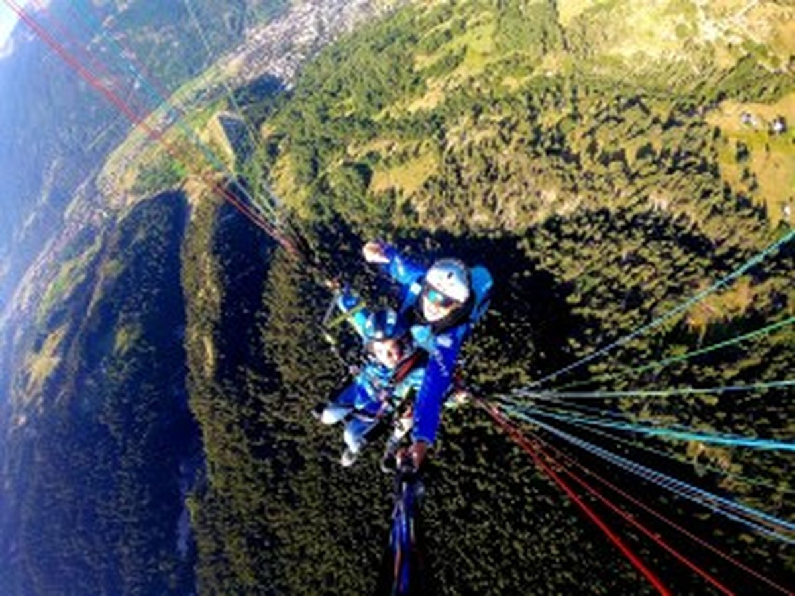

Découverte · enfants dès 20 kg
Vol Petit Aigle
Une balade aérienne tout en douceur pour les plus jeunes, dans les conditions calmes du début de matinée. Le premier envol dont ils se souviendront toute leur vie.
Voir les formules →Serre Chevalier · Hautes-Alpes
Baptêmes en biplace sur les sites les plus spectaculaires du Briançonnais. 30 ans d'expérience, un moniteur diplômé d'État, et une seule priorité : votre plaisir en toute sécurité au cœur des Écrins.
Nos expériences

Vols biplace
Tarifs 2026 · option photos & vidéo du vol · bons cadeaux valables un an.
90€
La balade aérienne douce pour les enfants (20 à 40 kg) : décollage en douceur dans les conditions calmes du matin, au-dessus de la vallée de Serre Chevalier.
110€
Notre vol signature : 15 à 25 minutes avec découverte des ascendances, sur des dénivelés de 500 à 1 200 mètres. Le baptême idéal pour tous publics.
150€
35 à 50 minutes d'exploitation optimale des masses d'air. Option Grand Tour (+50 €) pour un vol exceptionnel au-dessus du massif des Écrins.
En images
Ils ont volé avec nous
Une expérience absolument parfaite au-dessus de Serre Chevalier. Le moniteur est rassurant, passionné et très professionnel. La vue sur les Écrins est à couper le souffle. Je recommande les yeux fermés !
Vol incroyable au-dessus de la vallée de Serre Chevalier. Décollage en douceur, sensations garanties en altitude. Un moniteur au top qui met immédiatement en confiance. Merci !
Amazing experience above Serre Chevalier! The instructor was professional and very reassuring. The views of the Écrins massif are simply breathtaking. Highly recommend!
Premier baptême de parapente et quelle claque ! Le grand vol Serre Che était époustouflant. Les Écrins vus d'en haut, c'est une image qu'on ne peut pas oublier. Merci à Parapente Premium !
J'avais un peu d'appréhension au départ, mais le moniteur a su m'expliquer chaque étape calmement. Au final j'ai adoré ! La vue sur la vallée de Serre Chevalier est majestueuse. À refaire absolument.
Offert comme cadeau à mon conjoint pour son anniversaire. Il en parle encore ! 30 ans d'expérience ça se sent vraiment : sécurité irréprochable et sensations au rendez-vous. Parfait.
Une idée cadeau qui décolle
Anniversaire, Noël, un événement à fêter ? Offrez un vol découverte à partir de 90 €, dans un bon cadeau valable un an. Émotion et souvenirs garantis.
Réservation & contact
Une question, une date, un cadeau à offrir ? Écrivez-nous, on vous répond vite.